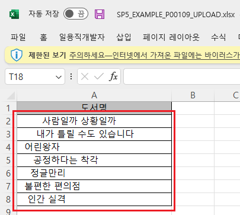
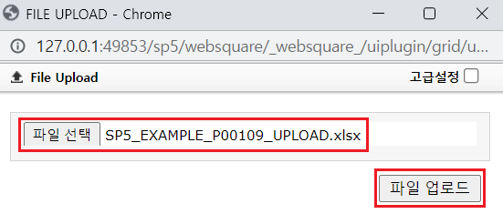
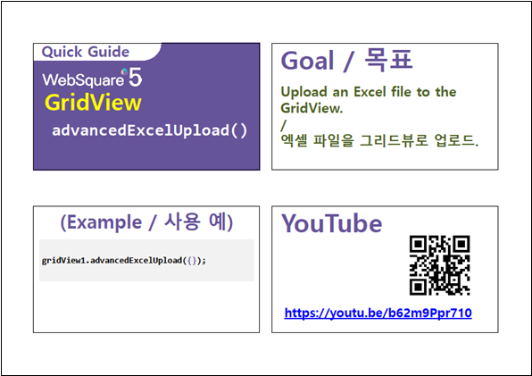

GridView의 엑셀 업로드 옵션 중 "trim" 설정의 예제입니다. 옵션 "trim"은 업로드할 엑셀 파일의 셀 데이터에 trim(앞뒤 공백 제거)을 적용하는 기능을 제공합니다.
엑셀 업로드하기 - 기본 동작
엑셀 업로드하기 - 업로드 옵션 "trim" 적용
버튼 엑셀 업로드 파일 다운로드을 클릭합니다.
다운로드한 엑셀 파일을 실행합니다.
엑셀 파일의 컬럼 "도서명"의 데이터 앞뒤로 공백이 포함되어있음을 확인합니다.
[다운로드된 엑셀(2021) 파일 예시]

버튼 엑셀 업로드 - 기본을 클릭합니다.
버튼 파일 선택을 클릭하여 다운로드한 엑셀 파일을 선택하고 버튼 파일 업로드을 클릭합니다.
[브라우저(Chrome) 실행 예시 - 엑셀 업로드 팝업]

GridView에 엑셀 데이터가 업로드됩니다.
각 셀을 더블 클릭하여 수정 모드로 변경합니다.
셀의 데이터 앞뒤에 공백이 포함되어 있는 것을 확인할 수 있습니다.
[브라우저(Chrome) 실행 예시]
버튼 엑셀 업로드 파일 다운로드을 클릭합니다.
다운로드한 엑셀 파일을 실행합니다.
엑셀 파일의 컬럼 "도서명"의 데이터 앞뒤로 공백이 포함되어있음을 확인합니다.
[다운로드된 엑셀(2021) 파일 예시]
버튼 엑셀 업로드 - trim 적용을 클릭합니다.
버튼 파일 선택을 클릭하여 다운로드한 엑셀 파일을 선택하고 버튼 파일 업로드을 클릭합니다.
[브라우저(Chrome) 실행 예시 - 엑셀 업로드 팝업]
GridView에 엑셀 데이터가 업로드됩니다.
각 셀을 더블 클릭하여 수정 모드로 변경합니다.
셀의 데이터 앞뒤에 공백이 제거된 것을 확인할 수 있습니다.
[브라우저(Chrome) 실행 예시]
원하는 시점에 엑셀 업로드 스크립트를 작성합니다.
[소스 코드 예시]
//예제 파일의 스크립트 "scwin.btn_ex3_onclick"를 참고하세요. var jsnOptions; jsnOptions = { headerExist : "1", //[default: 0] Excel 파일에서 그리드의 데이터에 header가 있는지 여부(1이면 header 존재 0이면 없음) trim : 1 //[default: 0, 1] 엑셀 각각의 셀데이터 좌, 우에 공백이 있는 경우 제거할지 여부 (1이면 제거, 0이면 유지) }; //GridView "grd_exam1"의 엑셀 업로드 실행 grd_exam1.advancedExcelUpload(jsnOptions);
options.trim
[웹스퀘어5 SP5 개발 가이드] GridView
링크 : https://docs1.inswave.com/sp5_user_guide/86bdcf48029b958b
[웹스퀘어5 SP5 개발 가이드] Excel 업로드 → GridView
링크 : https://docs1.inswave.com/sp5_user_guide/bc10c1b82c9a2a0b#8dc62e71f08d69c2
[웹스퀘어5 SP5 개발 가이드] Excel 파일의 업로드 시 공백 제거
링크 : https://docs1.inswave.com/sp5_user_guide/bc10c1b82c9a2a0b#0aaa863fa43c69e1
GridView의 Excel 파일의 업로드 시 공백 제거
링크 : https://youtu.be/b62m9Ppr710
